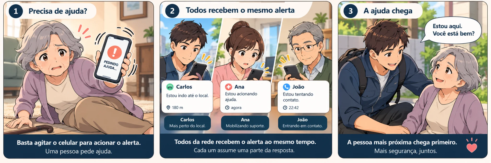
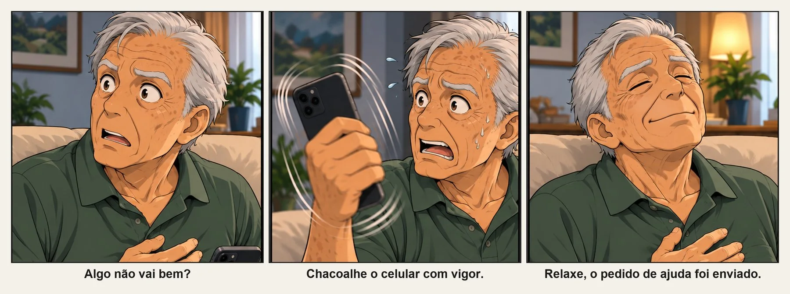
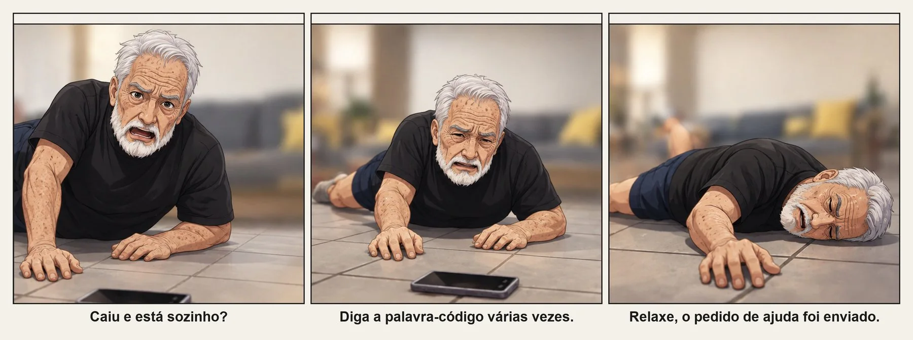
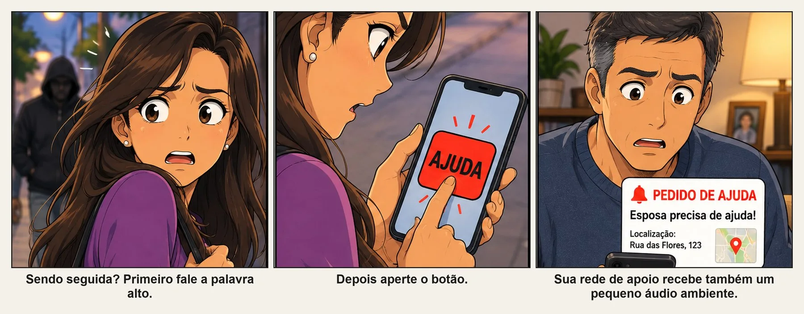

👴
Idosos e vulneráveis
Para quem vive sozinho ou depende de terceiros no dia a dia.
Aplicativo de alerta e pedido de ajuda pelo celular para idosos, famílias e pessoas vulneráveis.
O SOS FAROL ajuda pessoas vulneráveis a avisarem rapidamente familiares, amigos, vizinhos ou colegas de confiança. O pedido de ajuda pode ser acionado de três formas: agitando o celular, falando uma palavra de segurança ou tocando no botão de ajuda.
Quando todos recebem o mesmo alerta, cada membro pode assumir uma parte da resposta. O SOS FAROL conecta famílias, condomínios, vizinhanças e grupos de comerciantes em uma rede privada de apoio.

O alerta pode começar de três maneiras: agitar o celular, falar uma palavra de segurança ou tocar no botão de ajuda. A rede recebe o pedido e as pessoas de confiança podem coordenar a resposta conforme a situação.
O FAROL foi pensado para o cotidiano real — dentro de casa, na rua ou no trabalho.
Para quem vive sozinho ou depende de terceiros no dia a dia.
Uma forma rápida de acionar pais e pessoas de confiança em trajetos ou situações delicadas.
Uma rede discreta para pedir ajuda sem transformar cada situação em uma exposição pública.
Apoio rápido de familiares, amigos e cuidadores quando a pessoa precisar.
Funcionários e vizinhos podem ficar em sentinela uns pelos outros, especialmente à noite.
Família, condomínio, vizinhança, colegas e pessoas próximas conectadas em uma mesma rede.
Sem termos técnicos e sem depender de um segundo aplicativo de notificações.
Convide familiares, amigos, vizinhos ou colegas por código de convite, direto no próprio app.
Configure microfone, notificações e funcionamento em segundo plano.
Agite o celular, fale sua palavra de segurança ou toque no botão de ajuda.
Quem estiver mais perto pode ir ao local enquanto outra pessoa aciona a polícia ou faz contato.
As três tirinhas abaixo mostram, de forma visual e humana, como o FAROL pode agir em situações reais.

Em uma situação de assédio ou pressão dentro de casa, agitar o celular pode ser a forma mais rápida e discreta de acionar a rede de apoio.

Se a pessoa caiu, está sozinha e não consegue alcançar o telefone, a voz pode ser o caminho mais importante para pedir ajuda.

Uma adolescente ou mulher pode perceber que está sendo seguida, falar sua palavra de segurança e, se necessário, apertar o botão para reforçar o pedido de ajuda.
O diferencial está em quem recebe, em como a rede responde e na discrição do pedido de ajuda.
Com a proteção ativa, a palavra de segurança pode ser reconhecida mesmo sem a tela aberta.
Agitar o aparelho pode acionar rapidamente o pedido de ajuda quando falar ou tocar na tela não for conveniente.
Um caminho simples e direto para quem está com o aparelho em mãos.
A experiência pode permanecer neutra para reduzir exposição indevida da função de proteção.
Localização, horário, bateria e áudio contextual podem ajudar a rede a entender o que está acontecendo.
Uma pessoa pode ir ao local, outra pode ligar para a polícia e outra acompanhar o atendimento.
Instale, configure sua rede, faça testes reais e descubra com tranquilidade se o FAROL faz sentido para você e para quem você quer proteger.
Quero testar gratuitamente15 dias grátis com todos os recursos liberados. Sem cartão, sem compromisso.
Foi convidado por alguém da rede de apoio?
Baixar o app do convidadoBaixe e ative com o mesmo código de quem te convidou — cada plano do SOS FAROL inclui a pessoa protegida + 1 convidado.
Pagamento processado pela Kiwify. Já comprou? Pegue seu código de ativação com o e-mail da compra.
O SOS FAROL é um aplicativo de alerta e uma rede privada de apoio que permite avisar rapidamente pessoas de confiança quando você precisar de ajuda.
Familiares, amigos, vizinhos, cuidadores, colegas de trabalho ou outras pessoas previamente convidadas.
O pedido de ajuda pode ser acionado de três formas: agitando o celular, falando uma palavra de segurança ou tocando no botão de ajuda.
O funcionamento em segundo plano depende das permissões e configurações do aparelho. O aplicativo orienta o usuário sobre as configurações necessárias para os recursos habilitados.
Não. O FAROL avisa sua rede de apoio. Dependendo da situação, um membro da rede pode decidir acionar os serviços públicos de emergência.
Não. A proposta é permitir que o usuário experimente a rede e avalie se ela faz sentido para sua realidade antes de assinar.